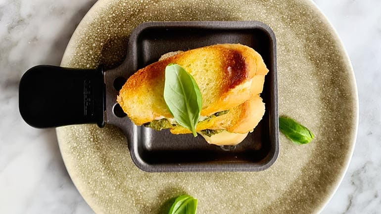

Mini tosti
Mini tosti maken van stokbrood, olijfolie, groene pesto en kaas past perfect bij de gourmet. Tijdens het gourmetten simpel te maken als ’n voorgerecht.
Ingrediënten
- 1 stokbrood
- 4 el olijfolie
- 80 gr pesto
- 4 plakken pittige kaas
Bereidingswijze
- Snij het stokbrood in 24 dunne plakken en smeer elk broodje met olijfolie in. Smeer 12 broodjes aan de andere kant in met groene pesto. Snij de kaas in kleine plakken en beleg de kant van de groene pesto hiermee.
- Leg de overige broodjes hier boven op met de ingesmeerde olie kant naar boven. Zorg dat de gourmet pannetjes heet zijn en bak de mini tost’s om en om krokant tot de kaas gesmolten is. Tosti gourmet maak je zó.
